Ansprechpartnerin
Laetitia Hackl
Studentische Vertretung
Der Gründungsbeirat des Funkenwerks fungiert als wichtige Verbindung zwischen Wissenschaft, regionaler Wirtschaft und Stadtgesellschaft. Er gibt der Initiative Impulse und begleitet durch die Unterstützung regionaler Aktivitäten die Gründungsförderung nachhaltig. Ebenso soll der Gründungsbeirat ideelle Koalitionen zwischen den Akteur:innen anregen, mögliche Kooperationsprojekte identifizieren und diese in der Entwicklung begleiten.
Auf der Agenda der Beiratssitzungen stehen die jüngsten Aktivitäten des Funkenwerks und dessen Projekte sowie aktuelle Entwicklungen in der Region. Auch zu Bedarfen des Gründungsökosystems tauschen sich die Teilnehmenden regelmäßig aus und stärken mit vereinter Kraft die Unternehmer:innen der Region.
Das sachverständige Gremium nimmt eine beratende Funktion bei der strategischen Ausrichtung des Funkenwerks ein und setzt sich aus Vertreter:innen der wichtigsten Hochschulgremien, führenden Persönlichkeiten aus Wirtschaft, Politik und Stadt sowie erfolgreichen Gründer:innen der Technischen Hochschule Augsburg und der studentischen Vertretung zusammen.
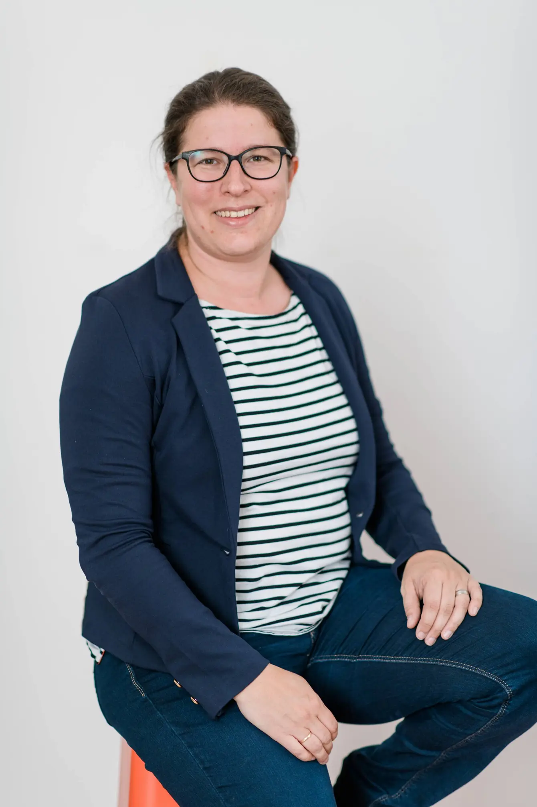
Stephanie Schuhknecht, MdL ist stellvertretende Fraktionsvorsitzende BÜNDNIS 90/DIE GRÜNEN, übernimmt die Schirmherrschaft für den Funkenwerk Gründungsbeirat der Hochschule Augsburg.
„Als Sprecherin für Start-Ups und Gründungsszene der Grünen Fraktion und nun als Schirmherrin des Gründungsbeirats der Hochschule Augsburg setze ich mich dafür ein, dass innovative Ideen gut umgesetzt werden können. Dafür muss die Wirtschaftsförderung so gestaltet werden, dass die Region für innovative und nachhaltige Unternehmensgründungen attraktiv ist. Das Funkenwerk als Start-up Schmiede #1 in unserer Region gilt es daher zu stärken und nachhaltig zu verstetigen.“
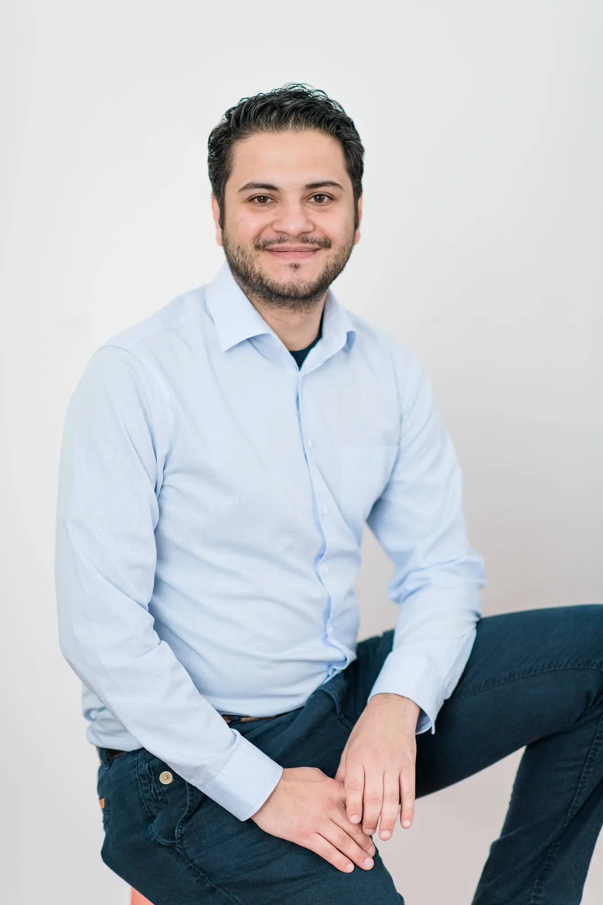
Serdar Akin ist Stadtratsmitglied Fraktion Bündnis90/Die Grünen und Fraktionssprecher für Bildung und Hochschule.
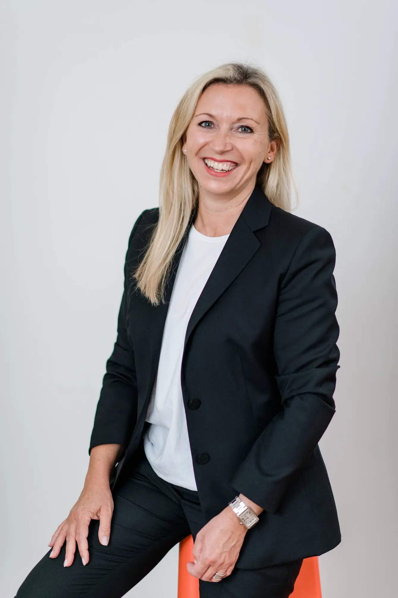
Heide Becker ist Leiterin des Beratungszentrum Recht und Betriebswirtschaft IHK Schwaben.
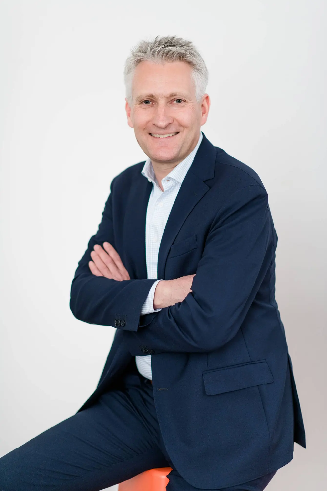
Hansjörg Durz ist CSU-Politiker, MdB, ehem. Bürgermeister der Stadt Neusäß und digitalpolitischer Sprecher der CSU im Deutschen Bundestag.
Maximilian Funke-Kaiser ist FDP-Politiker sowie Mitglied im Ausschuss für Bildung, Forschung und Technikfolgenabschätzung und Mitglied im Ausschuss für Digitales.
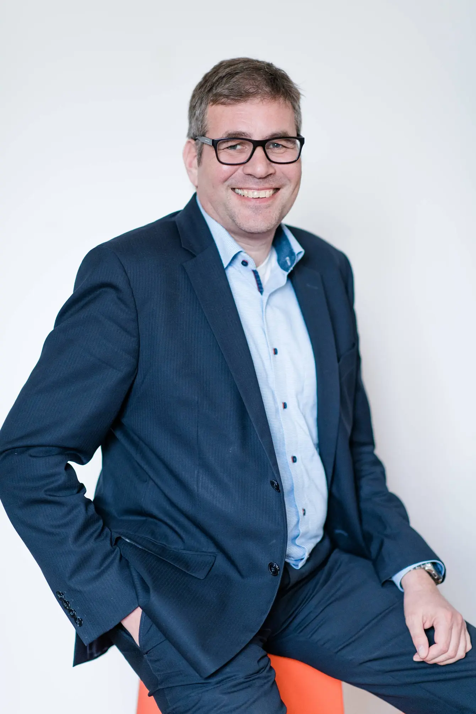
Dr. Wolfgang Hübschle ist Wirtschaftsreferent der Stadt Augsburg und Gründungsförderer.
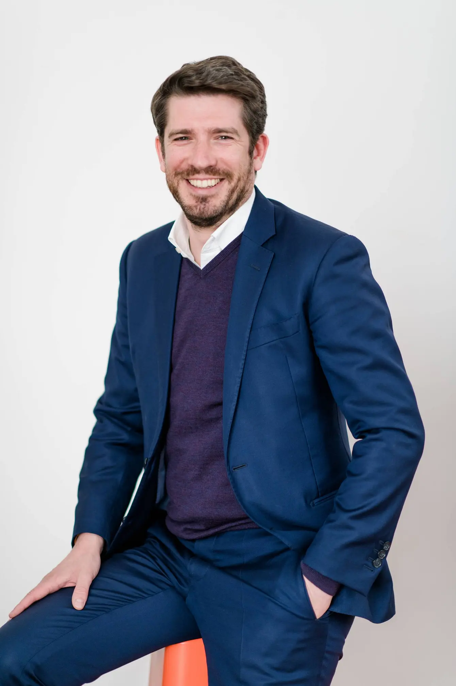
Daniel Kempf ist Managing Director von pd digital, pd digital HUB, pd next und pd ventures sowie Initiator des Rocketeer - der Plattform & dem Festival für Vordenker:innen, Ideengeber:innen & Gestalter:innen von Morgen.
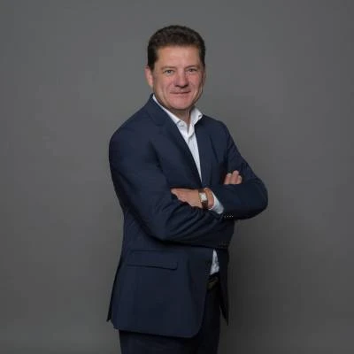
Dr. Klaus Leuthe ist Rechtsanwalt und Partner in der Wirtschaftskanzlei Sonntag und Partner. Zudem leitet er als Lehrbeauftragter das AWP-Seminar HSA gründet: Recht und Steuern und hält Gastvorträge zu steuerlichen und rechtlichen Themen im Gründungsprozess.
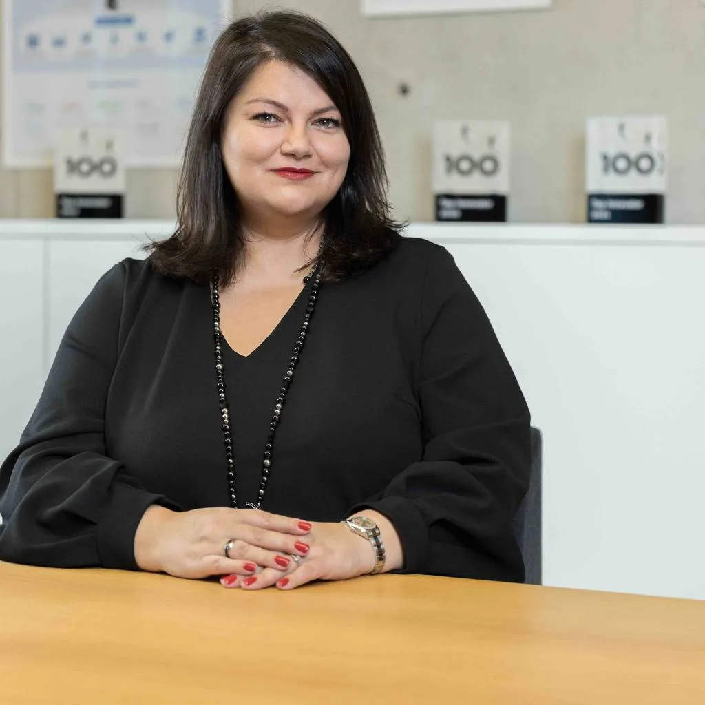
Ramona Meinzer ist Vorsitzende der Geschäftsführung der Aumüller GmbH, Geschäftsführerin der BTR GmbH und der BTR Service GmbH und Vorsitzende des Hochschulrats der Hochschule Augsburg.
Dr. Klaus Metzger ist Landrat des Landkreises Aichach-Friedberg.
Benedikt Sauter ist Hochschulalumnus und erfolgreicher Gründer und CEO der Xentral GmbH.
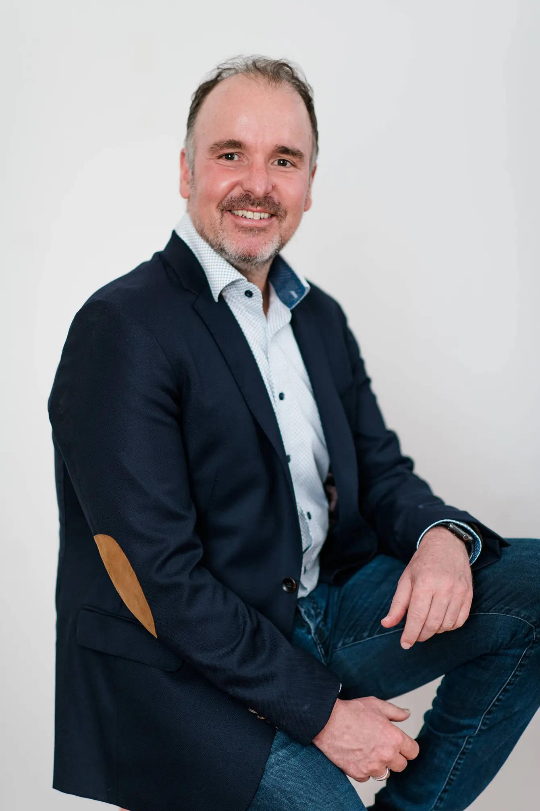
Stefan Schimpfle ist Geschäftsführer des Digitales Zentrum Schwaben DZ.S und langjähriger Partner des Funkenwerks.
Stephanie Schuhknecht, MdL ist stellvertretende Fraktionsvorsitzende BÜNDNIS 90/DIE GRÜNEN, Sprecherin für Startups und Gründerszene und Betreiberin des Podcasts ‚GrünGründen‘.
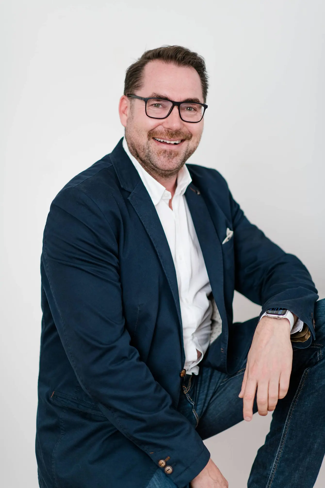
Horst Thieme ist Smart City Manager Stadt Augsburg.
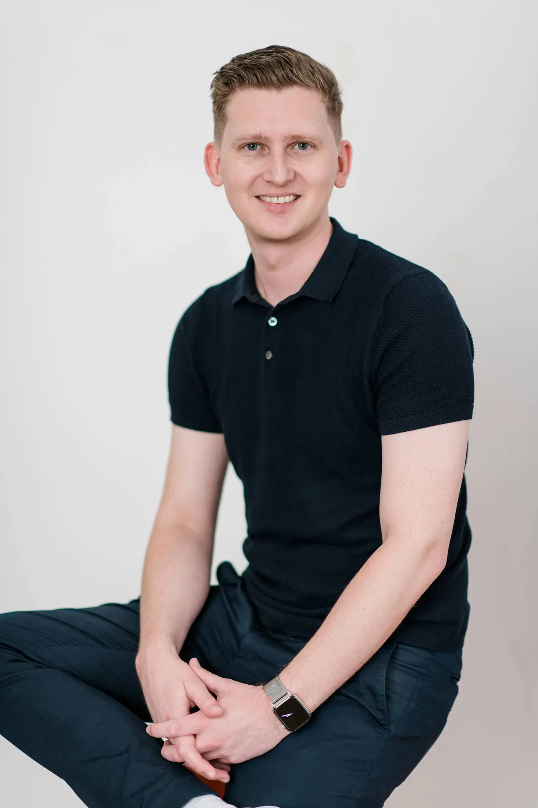
Weitere Angaben folgen.
André Baeten ist Senatsvertreter der Hochschule Augsburg und Professor an der Fakultät für Maschinenbau und Verfahrenstechnik.
Elisabeth Krön ist Mitglied der erweiterten Hochschulleitung, Vizepräsidentin für Transfer und Infrastruktur und Professorin an der Fakultät Architektur und Bau. Außerdem trägt sie die Projektverantwortung für HSA_transfer.
Christian Waibel ist Dekan, Professor und Mitglied im Fakultätsrat an der Fakultät für Architektur & Bau.
Stephan Zimmermann ist Gründungsbotschafter für das Funkenwerk an der Fakultät für Informatik, Mentor für STARTUP TEENS, Prodekan der Informatik, Professor an der Fakultät für Informatik und selbst Gründer.